Futura vs. Mr Eaves Mod
History of each typeface
Futura
Futura is a geometric sans-serif typeface that was created in Germany in the 1920s. It was designed by Paul Renner and released in 1927 by the Bauer Type Foundry. Renner was not directly connected to the Bauhaus school, but Futura shares the same modernist ethos where it strips down the letterforms down to the pure geometric shape and avoids ornamental details. In 1920, Paul Renner began sketching the idea, and the final design was part of a broader movement in Europe toward functional and rational design. Historically, Futura became a pretty popular modern typeface which was adopted quickly in advertising, publishing, and branding. Its clean forms make it very popular for headings and signage. One of the most important parts of its history was that it was used on the Apollo 11 lunar plaque in 1969, symbolizing industrial and technological achievement. Over the years, Futura has gained many variations including condensed, display, bold, and expanded versions, and overall the font has served as a model for many other geometric sans-serifs throughout the 20th century. Other uses include Supreme, Party City, Volkswagen, Royal Dutch Shell, Crayola, FremantleMedia and HP in their print ads.
Mr Eaves Mod
Mr Eaves Modern is a sans-serif typeface which was designed by Zuzana Licko and released in 2009 by Emigre Fonts, the influential independent digital type foundry, which was based in Berkeley, California. It is a variant of the font Baskerville, which was designed in Birmingham, England, in the 1750s. Licko, a Slovak-born American type designer and co-founder of Emigre, has been a major figure in digital typography since the 1980s. Mr Eaves Modern was also developed as part of a companion family to the popular Mrs Eaves serif typeface (also designed by Licko). Instead of simply removing serifs from Mrs Eaves to create a sans-serif, Licko crafted Mr Eaves with its own typographic identity while retaining proportional harmony with its serif counterpart. Within the Mr Eaves family, there are two related styles, Mr Eaves Sans, which retains some humanistic traits from the original serif model, and Mr Eaves Modern, which is a cleaner, more geometric look with squared terminals and simpler counter shapes. The design purpose here is less about representing an avant-garde movement (as with Futura) and more about offering a flexible, well-balanced sans-serif that can span editorial, corporate, and branding use while still pairing elegantly with the classic Mrs Eaves. Mr Eaves Modern shows the influence of early digital type design. It is made to work well both on screens and in print, with clear spacing and clean letter shapes. Because of this, it is often used when a modern typeface is needed that looks professional, simple, and refined without drawing too much attention to itself.
Comparison
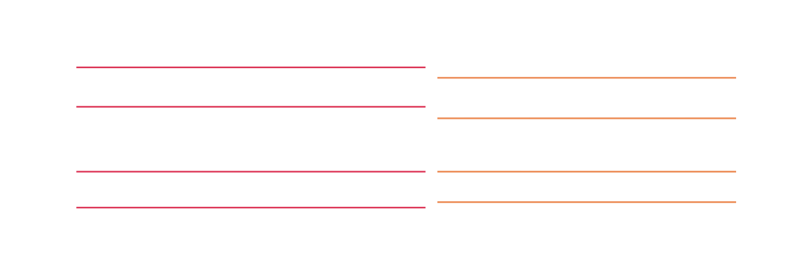
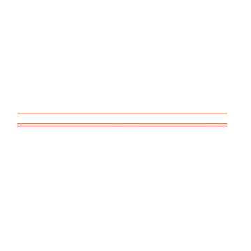
Examples and visual references
Futura
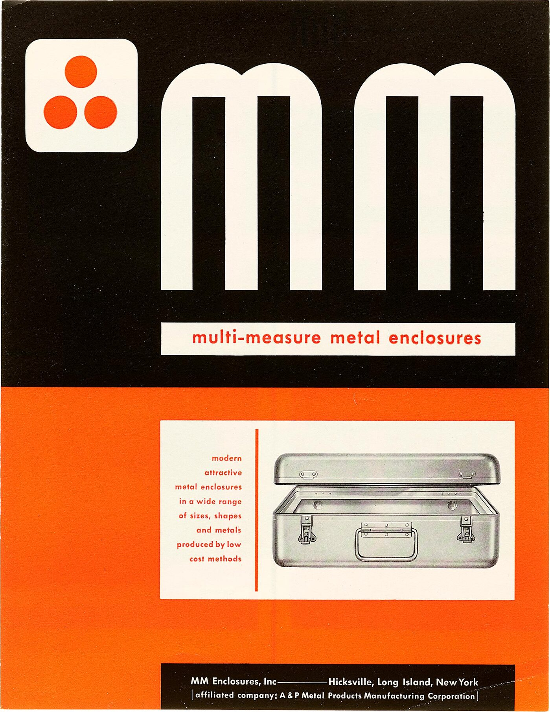


Mr Eaves Mod